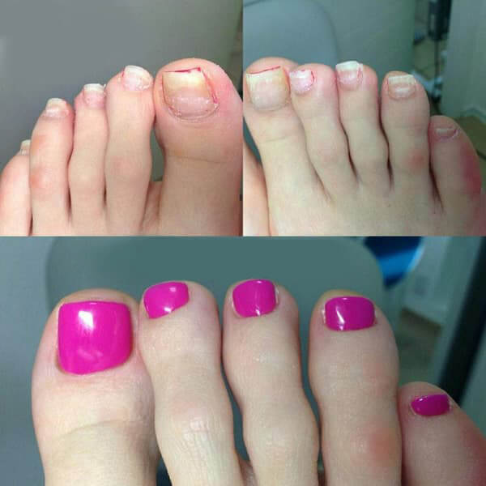

Λένα Παππά: "Εγγυώμαι ότι κάθε άτομο στο Αθήνα που έχει μολυνθεί από μύκητες των νυχιών θα μπορεί να παραγγείλει ένα αντιμυκητιασικό φάρμακο με έκπτωση 50% και έτσι να αποτρέψει τη δηλητηρίαση του αίματος"
Λένα Παππά: "Εγγυώμαι ότι κάθε άτομο στο Αθήνα που έχει μολυνθεί από μύκητες των νυχιών θα μπορεί να παραγγείλει ένα αντιμυκητιασικό φάρμακο με έκπτωση 50% και έτσι να αποτρέψει τη δηλητηρίαση του αίματος"
Γιατί ονομάζετε τον μύκητα των νυχιών επικίνδυνη ασθένεια;
Ξέρετε πόσοι άνθρωποι σκοτώθηκαν από μυκητίαση το 2019; 55.000 άνθρωποι πέθαναν πέρυσι μόνο στην ευρύτερη περιοχή του Αθήνα. Και πάνω από 31.000 από αυτούς πέθαναν από μύκητες των νυχιών. Δηλαδή περισσότεροι από τους μισούς. Ο μύκητας των νυχιών δεν επηρεάζει μόνο τα νύχια των ποδιών. Εισέρχεται στην κυκλοφορία του αίματος μέσω των ποδιών σας και εξαπλώνεται σε όλο το σώμα. Καταστρέφει κυριολεκτικά το σώμα από μέσα, προκαλώντας τεράστια πίεση σε όλα τα όργανα. Τα σπόρια του εγκαθίστανται στα εσωτερικά όργανα και αρχίζουν να πολλαπλασιάζονται δημιουργώντας έτσι βλάβες. Αυτό έχει ως αποτέλεσμα τη μυκητίαση των εσωτερικών οργάνων. Αυτό σημαίνει ότι ένα μολυσμένο άτομο "σαπίζει" από μέσα. Η καρδιά του μπορεί να καταρρεύσει ανά πάσα στιγμή, ένα αγγείο στον εγκέφαλο μπορεί να σπάσει, το συκώτι μπορεί να εμφανίσει καρκίνο ή τα νεφρά μπορεί να σταματήσουν να λειτουργούν. Όλοι όσοι έχουν μύκητες των νυχιών διατρέχουν κίνδυνο. Το ανοσοποιητικό σύστημα που αποδυναμώνεται από τα συχνά κρυολογήματα, την πολλή δουλειά ή το άγχος μπορεί να αποτύχει, προκαλώντας αιφνίδιο θάνατο.
Γι' αυτό θεωρώ ότι ο μύκητας των νυχιών είναι μια εξαιρετικά επικίνδυνη ασθένεια, η οποία κατέχει σήμερα μια από τις πρώτες θέσεις μεταξύ των αιτιών θανάτου σε εθνικό επίπεδο. Ακούμε συχνά για τον καρκίνο και τους όγκους, αλλά ας το παραδεχτούμε, ο καρκίνος προσβάλλει το 3-4% των ανθρώπων, ενώ ο μύκητας των νυχιών εμφανίζεται σχεδόν σε κάθε δεύτερο άτομο ηλικίας 40-45 ετών.
Πώς γίνεται λοιπόν οι γιατροί να μην μπορούν να αντιμετωπίσουν αυτή την ασθένεια; Άλλωστε, η δουλειά σας είναι να σώζετε τις ζωές των ανθρώπων.
Αρχικά, πολλοί άνθρωποι που έχουν προσβληθεί από μύκητες των νυχιών των ποδιών δεν πηγαίνουν να επισκεφθούν γιατρό επειδή υποτιμούν τον κίνδυνο αυτής της πάθησης. Και αν επισκεφθούν γιατρό, το κάνουν όταν η κατάσταση επιδεινωθεί. Για παράδειγμα, όταν βλέπουν μια δραματική αλλαγή ή ένα πρόβλημα με τα πόδια ή τα δάχτυλα των ποδιών τους. Συνήθως παίρνουν μια συνταγή για κάποιο φάρμακο που βελτιώνει ελαφρώς την κατάστασή τους, αλλά σπάνια προλαβαίνουν να πάνε σε ένα επόμενο ραντεβού, αφήνοντας την ασθένεια να εξελιχθεί. Ωστόσο, οι μυκητιασικές λοιμώξεις απαιτούν συνεπή θεραπεία. Επιπλέον, πολύ λίγοι άνθρωποι κατανοούν τις συνέπειες των μυκητιασικών λοιμώξεων και τι μπορούν να κάνουν στα εσωτερικά σας όργανα. Θα μπορούσα να σας μιλήσω για εκατοντάδες περιπτώσεις, αλλά ίσως θα μείνω σε εκείνες που καταδεικνύουν τους κινδύνους της μυκητιασικής λοίμωξης των νυχιών.

Μπορείτε να βελτιώσετε κάπως τις εξωτερικές εκδηλώσεις του μύκητα, αλλά αυτό δεν θα απομακρύνει τον κίνδυνο θανατηφόρου αποτελέσματος. Μπορείτε ακόμα να πεθάνετε ανά πάσα στιγμή.
Εκτός αυτού, οι κλινικές είναι εξαιρετικά υποστελεχωμένες αυτή τη στιγμή. Υπάρχει μόνο ένας μυκητολόγος σε ολόκληρη την περιοχή και μας λείπει το 37% των δερματολόγων. Περισσότερο από το ήμισυ του διαθέσιμου προσωπικού είναι ανεπαρκώς καταρτισμένο. Αμφιβάλλω έντονα ότι είναι σε θέση να διαγνώσουν και να θεραπεύσουν περίπλοκες μυκητιασικές λοιμώξεις. Μερικές φορές ο ασθενής θα ήταν καλύτερα να μείνει στο σπίτι του παρά να ακολουθήσει τη θεραπεία που συνταγογραφούν οι γιατροί του ΕΣΥ. Πρέπει να προσλάβουμε άτομα με ελλιπή προσόντα, αφού χρειαζόμαστε απεγνωσμένα προσωπικό. Όλοι έχουν πτυχίο ιατρικής, ορισμένοι από αυτούς αποφοίτησαν με άριστα, αλλά παρ' όλα αυτά αυτοί οι γιατροί δεν έχουν αρκετή εμπειρία και μπορεί να καταστρέψουν την υγεία σας. Οι ηλικιωμένοι γιατροί συνταξιοδοτούνται ή πεθαίνουν, μη μπορώντας να αντεπεξέλθουν στο υπερβολικό άγχος. Αντικαθίστανται από αυτούς τους άπειρους νεοσύλλεκτους που δεν έχουν ιδέα πώς να αντιμετωπίσουν τους ασθενείς τους. Μακάρι το προσωπικό μου να ήταν πιο εξειδικευμένο και έμπειρο, αλλά δεν μπορώ να κάνω τίποτα.
Μήπως το υψηλό ποσοστό θνησιμότητας από μυκητιασικές λοιμώξεις οφείλεται στην έλλειψη έμπειρων γιατρών στην περιοχή μας;
Είναι ένας από τους λόγους, αλλά όχι ο μοναδικός. Υπάρχει επίσης μια καταστροφική έλλειψη αποτελεσματικών θεραπειών. Τα φαρμακεία πουλάνε τα πάντα και τα πάντα, αλλά αυτά τα φάρμακα που κυκλοφορούν χωρίς συνταγή δύσκολα μπορούν να βοηθήσουν. Τα φάρμακα παλαιάς γενιάς είναι άχρηστα, όπως ακριβώς και τα υπερτιμημένα, πολυδιαφημισμένα νέα προϊόντα. Τα συνταγογραφούμενα φάρμακα δεν είναι καλύτερα. Συνήθως αυτά τα φάρμακα μπορεί να προσφέρουν μια προσωρινή ανακούφιση, αλλά την ίδια στιγμή επηρεάζουν το συκώτι ή το στομάχι τόσο άσχημα που οι συνέπειες για την υγεία μπορεί να είναι καταστροφικές. Τα περισσότερα φάρμακα δεν αντιμετωπίζουν πραγματικά τον μύκητα. Αυτό που κάνουν είναι να απομακρύνουν τα εξωτερικά σημάδια, ενώ η μυκητιασική λοίμωξη παραμένει στο σώμα, σκοτώνοντας αργά τον ασθενή.
Ως αποτέλεσμα όλων αυτών των παραγόντων, οι άνθρωποι πεθαίνουν από δηλητηρίαση του αίματος και λοιμώξεις εσωτερικών οργάνων που προκαλούνται από έναν κοινό μύκητα των νυχιών. Υπάρχουν επίσης ιδιωτικές κλινικές, αλλά απασχολούν το ίδιο είδος γιατρών. Ουσιαστικά, πρόκειται για άπειρους πτυχιούχους που γνωρίζουν ελάχιστα για τις ασθένειες και τις θεραπείες. Το μόνο τους καθήκον είναι να αποσπούν όσα περισσότερα χρήματα μπορούν από τους ασθενείς τους. Δεν ενδιαφέρονται να προσφέρουν πραγματική βοήθεια.
Τι πρέπει να κάνουν οι πάσχοντες από μύκητες των νυχιών; Να περιμένουν να έρθει ο θάνατός τους; Ως έμπειρος γιατρός, θα πρέπει να προσπαθήσετε να λύσετε αυτό το πρόβλημα.
Φυσικά, δεν κάθομαι και δεν κάνω τίποτα, αλλά δεν μπορώ να λύσω το πρόβλημα του προσωπικού. Είναι δουλειά των ιατρικών σχολών και των πανεπιστημίων, όχι δική μου. Δεν μπορώ να εκπαιδεύσω νέους γιατρούς μόνος μου. Δεν θα περίμενα γρήγορες αλλαγές εδώ. Άλλες βρετανικές περιοχές αντιμετωπίζουν τα ίδια προβλήματα. Είμαστε όλοι λίγο πολύ στην ίδια βάρκα.
Αλλά όπως λένε, κάθε σύννεφο έχει και μια ασημένια επένδυση. Υπάρχουν κάποια πρόσφατα επιτεύγματα στον αγώνα για τις ζωές των ανθρώπων. Για παράδειγμα, η ευρύτερη περιοχή του Αθήνα συμμετέχει σε ένα έργο μεγάλης κλίμακας που επικεντρώνεται στη διανομή μιας αποτελεσματικής καινοτόμου θεραπείας που μπορεί να θεραπεύσει πλήρως τον μύκητα των νυχιών των ποδιών και να απομακρύνει τη μυκητιασική λοίμωξη από το σώμα. Το ίδιο το έργο θα ξεκινήσει στα τέλη του 2020, αλλά οι κάτοικοι του Μαντσούνι μπορούν να λάβουν τη θεραπεία αυτή τη στιγμή, πριν όλες οι άλλες περιοχές αποκτήσουν πρόσβαση σε αυτήν.
Γιατί πιστεύετε ότι αυτό το φάρμακο θα αλλάξει την κατάσταση;
Μπορεί να θεραπεύσει πλήρως τον μύκητα των νυχιών των ποδιών, αφαιρώντας τις εξωτερικές εκδηλώσεις του και καθαρίζοντας ολόκληρο το σώμα. Από τις πρώτες ημέρες χρήσης, μειώνει τον κίνδυνο θανάτου σχεδόν στο μηδέν. Με την απλή έναρξη της θεραπείας, ο ασθενής βγαίνει από την ομάδα κινδύνου. Αυτή η θεραπεία καθαρίζει το αίμα και τα εσωτερικά όργανα από τα μυκητιακά κύτταρα και σταματά τις αρνητικές διεργασίες που προκαλούνται από τη μυκητιασική λοίμωξη που σκότωνε σιωπηλά τον ασθενή από μέσα.
Κατά τη γνώμη μου, αυτό το φάρμακο μπορεί να σώσει χιλιάδες ζωές. Έκανα λοιπόν ό,τι μπορούσα για να πείσω τις αρχές να επιλέξουν αυτή την περιοχή να είναι ο πρώτος συμμετέχων σε αυτή τη δοκιμαστική λειτουργία.
Ποια είναι η εμπορική ονομασία αυτού του φαρμάκου; Και τι το κάνει τελικά τόσο αποτελεσματικό;
Μέχρι σήμερα, είναι η πιο αποτελεσματική θεραπεία για μυκητιασικές ασθένειες. Μιλάω για ένα προϊόν νέας γενιάς που ονομάζεται . Σε αντίθεση με τα περισσότερα φάρμακα, αναπτύχθηκε από ανεξάρτητα ερευνητικά εργαστήρια. Αυτό το φάρμακο δημιουργήθηκε από μια ομάδα μερικών από τους καλύτερους γιατρούς στη Βρετανία. Είναι δέκα φορές πιο αποτελεσματικό σε σύγκριση με τις παραδοσιακές ιατρικές και καλλυντικές θεραπείες. Ταυτόχρονα, δεν έχει παρενέργειες, δεν προκαλεί εθισμό και βοηθά τον οργανισμό να αναπτύξει ανοσία στους παθογόνους μύκητες, γεγονός που εξαλείφει τον κίνδυνο επαναμόλυνσης.
Το μυστικό της αποτελεσματικότητάς του βρίσκεται στο σχεδιασμό του ίδιου του ανθρώπινου σώματος. Ο μύκητας των νυχιών είναι τόσο δύσκολο να ξεφορτωθεί κανείς επειδή παραμένει στους ιστούς. Συνήθως, μετά τη διακοπή της φαρμακευτικής αγωγής, ο μύκητας επανεμφανίζεται. Ένα άλλο πρόβλημα είναι ότι το ανοσοποιητικό σύστημα του οργανισμού δεν είναι σε θέση να τον καταπολεμήσει μόνο του. Το καλύτερο που μπορεί να κάνει είναι να επιβραδύνει την ανάπτυξη της μυκητιασικής λοίμωξης. Ένα αδύναμο ανοσοποιητικό σύστημα δεν μπορεί να σταματήσει την ταχεία ανάπτυξη του μύκητα, η οποία τελικά οδηγεί στο θάνατο.
Το βοηθά τον οργανισμό να παράγει ειδικά αντισώματα που καταστρέφουν τους μύκητες σε όλο το σώμα. Χάρη σε αυτό, το ανθρώπινο σώμα καθαρίζεται πλήρως από τους μύκητες. Επιπλέον, η παραγωγή αντισωμάτων συμβαίνει ακόμη και μετά τη διακοπή της θεραπείας. Αυτή η θεραπεία βοηθά το σώμα να αυξήσει την αντίδρασή του σε μια μυκητιασική λοίμωξη κατά δεκαπλάσιο συντελεστή. Σας καθιστά απίθανο να ξαναμολυνθείτε. Σε μία μόνο θεραπευτική αγωγή, το σας καθαρίζει πλήρως από τη μυκητιασική λοίμωξη, αποτρέποντας τυχόν επιπλοκές.
Γιατί το είναι πιο αποτελεσματικό από άλλους δημοφιλείς αντιμυκητιασικούς παράγοντες που πωλούνται στα φαρμακεία;
Οι μυκητιασικές λοιμώξεις είναι ζωντανοί οργανισμοί και προσαρμόζονται στο περιβάλλον όπως κάθε άλλος ζωντανός οργανισμός. Η πλειονότητα των αντιμυκητιασικών παραγόντων αναπτύχθηκε πριν από 20-30 χρόνια. Κατά τη διάρκεια αυτών των ετών, οι μυκητιασικές λοιμώξεις ανέπτυξαν ανθεκτικότητα στους περισσότερους αντιμυκητιασικούς παράγοντες. Το είναι μια εντελώς νέα φόρμουλα - αναπτύχθηκε με βάση τη μελέτη της παθογένειας περισσότερων από 6.000 διαφορετικών στελεχών μυκήτων. Χάρη στη μοναδική στο είδος της καινοτόμο σύνθεσή του, σκοτώνει τους μύκητες τόσο εξωτερικά, απομακρύνοντάς τους από τα νύχια και το δέρμα, όσο και εσωτερικά καθαρίζοντας έτσι τον οργανισμό.
Η αποτελεσματικότητά του έχει αποδειχθεί στις ερευνητικές μας εγκαταστάσεις. Πέρασε από κλινικές δοκιμές στις οποίες συμμετείχαν εθελοντές που χρησιμοποιούσαν διάφορες δημοφιλείς αντιμυκητιασικές θεραπείες. Τα αποτελέσματα επιβεβαίωσαν την υψηλή αποτελεσματικότητα του .
Το εξουδετερώνει τη μόλυνση διασπώντας τα μυκητιακά σωματίδια που βρίσκονται στο αίμα και τα εσωτερικά όργανα. Αυτό σταματά τον πολλαπλασιασμό της λοίμωξης στο σώμα και οδηγεί σε πλήρη ανάρρωση. Όλα τα ίχνη της λοίμωξης εξαλείφονται. Ως αποτέλεσμα, ο ασθενής αναρρώνει πλήρως και μπορεί να επιστρέψει σε μια υγιή ζωή. Επιπλέον, ο οργανισμός αναπτύσσει ανοσία στις μυκητιασικές λοιμώξεις, δηλαδή δεν θα κολλήσετε ξανά.
Αυτή η φόρμουλα έχει βαθιά θεραπευτική επίδραση στο σώμα:
1. Καταστρέφει τη μυκητιασική λοίμωξη.
2. Ανακουφίζει από τον κνησμό, το ξεφλούδισμα και τον ερεθισμό του δέρματος στα πόδια σας, ξεκινώντας από την πρώτη εφαρμογή.
3. Αποκαθιστά γρήγορα τα νύχια και επουλώνει τις πληγές και τις ρωγμές στα πόδια.
4. Εξαλείφει την κακοσμία και ομαλοποιεί τη λειτουργία των ιδρωτοποιών αδένων.
5. Εμποδίζει την αναπαραγωγή και την ανάπτυξη παθογόνων μικροβίων.
6. Ομαλοποιεί το ανοσοποιητικό σύστημα και βοηθά στη θεραπεία χρόνιων μυκητιασικών ασθενειών.
7. Καθαρίζει το αίμα και τη λέμφο από τα προϊόντα της αποσύνθεσης των μυκήτων.
8. Βοηθά τον οργανισμό να αναπτύξει ανοσία στα περισσότερα από τα γνωστά στελέχη παθογόνων μυκήτων.
9. Η βολική συσκευασία αποτρέπει τις επαναμολύνσεις.
Ανακουφίζει από όλα τα συμπτώματα της μυκητιασικής νόσου εντός της συνιστώμενης θεραπείας.
Το διατίθεται σε μορφή σπρέι, σε εύχρηστο πλαστικό μπουκάλι. Χωράει σε κάθε τσάντα ή πορτοφόλι. Ένα μπουκάλι είναι αρκετό για χρήση 2-3 μηνών. Το μπουκάλι με το σπρέι βοηθά στην εξάλειψη του κινδύνου επαναμόλυνσης και στη διακοπή της εξάπλωσης του μύκητα στο υγιές δέρμα.
Υπάρχουν περιορισμοί χρήσης; Γιατί πωλείται με τόσο μεγάλη έκπτωση;
Δεν υπάρχουν περιορισμοί χρήσης. Η φόρμουλα είναι υποαλλεργική. Μπορεί να χρησιμοποιηθεί ακόμη και αν είστε αλλεργικοί σε άλλα φάρμακα. Είναι ασφαλές για το συκώτι, το οποίο είναι συνήθως το πρώτο που υποφέρει όταν λαμβάνονται φάρμακα από το στόμα.
Απαντώντας στη δεύτερη ερώτησή σας, όπως είπα, το φάρμακο αναπτύχθηκε από ανεξάρτητα ερευνητικά ιδρύματα. Παρασκευάζεται στις εγκαταστάσεις ενός ανεξάρτητου ερευνητικού κέντρου και το κόστος παραγωγής δεν είναι φθηνό. Εάν η φόρμουλα του ανήκε σε κάποια ιδιωτική φαρμακευτική εταιρεία, θα πωλούνταν σε πολύ υψηλότερη τιμή. Αλλά αυτή η ειδική διαφημιστική εκστρατεία έχει σκοπό να ενθαρρύνει όσους φροντίζουν την υγεία τους. Εάν παραγγείλετε μια πλήρη σειρά θεραπείας με , θα έχετε έκπτωση 50%. Ωστόσο, η προσφορά είναι περιορισμένη.
Πώς μπορούν οι άνθρωποι να αποκτήσουν ; Χρειάζεται να προσκομίσουν την ταυτότητά τους ή να πάρουν συνταγή;
Η μόνη προϋπόθεση για να πληροί κανείς τις προϋποθέσεις είναι να ζει στην Αθήνα και να είναι άνω των 30 ετών. Τα θα αποστέλλονται απευθείας από την αποθήκη και θα παραδίδονται από ταχυμεταφορέα. Θα ήταν αντιπαραγωγικό να διανεμηθεί μέσω τοπικών σημείων πώλησης. Δεν θέλουμε οι άνθρωποι να σχηματίζουν ουρές για να το προμηθευτούν. Οι ασθενείς με μύκητες υποφέρουν καθημερινά, θα ήταν σκληρό να τους κάνουμε να περιμένουν. Κανείς δεν χρειάζεται επιπλέον άγχος. Είναι πολύ πιο εύκολο να παραγγείλετε το φάρμακο μέσω διαδικτύου. Απλά συμπληρώστε τη φόρμα παραγγελίας, δίνοντας το όνομα και τον αριθμό τηλεφώνου σας και περιμένετε να επικοινωνήσουμε μαζί σας. Ο ειδικός μας θα επικοινωνήσει μαζί σας και θα σας συστήσει μια πορεία θεραπείας κατάλληλη για την κατάστασή σας. Καθορίστε τη διεύθυνσή σας και ένα βολικό διάστημα παράδοσης και απλά περιμένετε τον ταχυμεταφορέα να παραδώσει την παραγγελία σας.
Συμπληρώστε τη φόρμα παραγγελίας απευθείας σε αυτόν τον ιστότοπο , που έχει σχεδιαστεί για την επεξεργασία των παραγγελιών που προέρχονται από την Αθήνα. Όπως είπα, το μόνο που χρειάζεται να καταχωρίσετε είναι το όνομα και τον αριθμό τηλεφώνου σας. Δίνω την προσωπική μου εγγύηση ότι όλοι όσοι ζητήσουν αυτό το σπρέι θα το πάρουν σίγουρα.
Ενημερωμένο . Το απόθεμα είναι περιορισμένο. Η προωθητική ενέργεια ισχύει μόνο μέχρι .
Κατόπιν αιτήματος της Δρ. Λένας Παππά, παρέχουμε το έντυπο παραγγελίας για τα
:

Το ίδιο! Μόλις πήρα το και άρχισα να το χρησιμοποιώ, αλλά η επίδραση στο δέρμα και τα νύχια είναι ήδη εμφανής!

Είμαι τόσο ευγνώμων για τις πληροφορίες σχετικά με αυτό το φάρμακο. Έψαχνα για κάτι που θα μπορούσε να με βοηθήσει. Ανυπομονώ να παραδοθεί η παραγγελία μου! Ευχαριστώ!

Δρ Παππά, σας ευχαριστώ πολύ! Το δοκίμασα και αισθάνομαι ανακούφιση. Ας δούμε τι θα συμβεί σε μια εβδομάδα. Είναι πολύ νωρίς για να πω, αλλά θα σας κρατάω ενήμερους. Τα νύχια των ποδιών μου φαίνονται ήδη καλύτερα. Ελπίζω να είμαι μια χαρά!
Νίκος, μην ανησυχείς. Απλά συνεχίστε να χρησιμοποιείτε
το . Είναι σημαντικό να ακολουθείτε τις οδηγίες
κατά τη χρήση αυτού του φαρμάκου.
Στην υγειά σας, Λένα

Βοηθήστε με! Έχω μύκητες και δεν μπορώ να τους ξεφορτωθώ ό,τι κι αν δοκιμάσω. Είναι επώδυνο και φαίνεται πολύ άσχημο. Επηρεάζει την καθημερινή μου ζωή. Δεν ξέρω τι να κάνω. Έχω πάρει διάφορα φάρμακα κάθε τόσο, αλλά δεν βοηθούν :(

Μελίν, δοκίμασε το , λειτουργεί πραγματικά. Και είναι τόσο συμφέρουσα. Το χρησιμοποίησα και με βοήθησε. Είχα μύκητες στα πόδια μου. Ένιωθα σαν σακάτης. Ήμουν έτοιμος να τα παρατήσω. Τότε η μητέρα μου ανακάλυψε το και μου το συνέστησε ανεπιφύλακτα. Παρεμπιπτόντως, το αγόρασε πριν από ένα μήνα, όταν πωλούνταν σε κανονική τιμή (ήταν αρκετά ακριβό, σχεδόν 20 λίρες). Το χρησιμοποιώ εδώ και 3 εβδομάδες και μου έχει μείνει ακόμα αρκετό για μία ακόμη εβδομάδα. Η πλήρης θεραπεία διαρκεί ένα μήνα. Έκοψα τα τμήματα του νυχιού του ποδιού που είχαν προσβληθεί. Ωστόσο, μου έχει μείνει ακόμα λίγο στο μεγάλο δάχτυλο του ποδιού. Ελπίζω ότι θα καταφέρω να το αφαιρέσω κατά τη διάρκεια της εβδομάδας που απομένει. Δοκίμασα πολλές θεραπείες στο παρελθόν, αλλά τίποτα δεν βοήθησε.
Περιποιήθηκα επίσης τις μπότες μου με για να βεβαιωθώ ότι δεν έχει μείνει μύκητας εκεί.

Πώς μπορώ να πάρω το μου;

Ναταλία, απλά συμπληρώστε τη φόρμα παραπάνω , αλλά θα πρέπει να βιαστείτε και να κάνετε την παραγγελία σας όσο ισχύει ακόμα η προσφορά. Προσωπικά το βρήκα πολύ χρήσιμο.
Ian, σας ευχαριστώ πολύ, ζήτησα ήδη τη δική μου μέσω
της φόρμας παραγγελίας.
Πόσο καιρό διαρκεί η αποστολή;
Ναταλία, περίπου μια εβδομάδα:)

Απίστευτα πράγματα, όλοι πρέπει να το δοκιμάσουν. Ήμουν άρρωστος και κουρασμένος από τον μύκητα των νυχιών των ποδιών μου. Δεν μπορούσα να φορέσω σανδάλια και ντρεπόμουν να πάω στην παραλία. Αλλά αφού χρησιμοποίησα το για τρεις εβδομάδες, είδα εμφανείς βελτιώσεις. Όχι πια μύκητες στα νύχια των ποδιών!

Μάρα, είναι πραγματικά τόσο σπουδαίο; Αν ναι, μάλλον πρέπει να προχωρήσω και να το παραγγείλω κι εγώ.

Αυτό το πράγμα είναι φοβερό, η γυναίκα μου και εγώ το χρησιμοποιήσαμε αφού κολλήσαμε αυτή την άσχημη μόλυνση. Μέχρι στιγμής τόσο καλά, η οικογένειά μας είναι απαλλαγμένη από μύκητες τώρα. Μπορούμε τώρα να πάμε σε δημόσιες πισίνες και σάουνες.

Ουάου, φαίνεται ότι δεν είμαι η μόνη με τέτοια προβλήματα. Δόξα τω Θεώ, άρχισα να χρησιμοποιώ το πριν από ένα μήνα και ο μύκητας των νυχιών των ποδιών μου έχει φύγει τώρα. Δοκίμασα πολλά άλλα φάρμακα και αλοιφές, αλλά αυτό είναι μακράν το καλύτερο και παρέχει τα ταχύτερα αποτελέσματα.

Γεια σας παιδιά, βοηθάει πραγματικά; Δοκίμασα κάποια συνταγογραφούμενα φάρμακα αλλά ήταν άχρηστα.

Μαρία, είναι, δεν υπάρχει καμία αμφιβολία γι 'αυτό. Είναι πολύ αποτελεσματικό αλλά και πλήρως φυσικό. Βιαστείτε να πάρετε το δικό σας όσο είναι ακόμα σε προσφορά! Η πεθερά μου χρησιμοποίησε το και ξεφορτώθηκε τον μύκητα των ποδιών της.

Σας ευχαριστώ, το με βοήθησε σε χρόνο μηδέν! Το παρήγγειλα απευθείας από τον κατασκευαστή! Μην καθυστερείτε τη θεραπεία, είναι προτιμότερο να απαλλαγείτε από τη μυκητιασική λοίμωξη το συντομότερο δυνατό παρά να την αφήσετε να σας σκοτώσει αργά.

Σας ευχαριστώ, Δρ Παππά. Αν δεν ήσασταν εσείς, δεν θα είχα δοκιμάσει ποτέ αυτό το φάρμακο! Τα νύχια των ποδιών μου θρυμματίζονταν διαρκώς και ένιωθα πραγματικά πόνο. Δοκίμασα αντιμυκητιασικό βερνίκι για τα νύχια και πήρα μερικά χάπια. Το βερνίκι νυχιών παρείχε μόνο προσωρινή ανακούφιση. Τώρα χρησιμοποιώ το και είναι υπέροχο. Το ψεκάζω στα δάχτυλα των ποδιών μου εδώ και 3 εβδομάδες και θέλω να ολοκληρώσω ολόκληρη τη θεραπεία, η οποία υποτίθεται ότι διαρκεί ένα μήνα.
Η παραγγελία μου έφτασε πολύ γρήγορα, btw.
 Tanisha, είστε περισσότερο από ευπρόσδεκτη. Ποια
φάρμακα χρησιμοποιούσατε για τη θεραπεία του μύκητα των νυχιών των ποδιών σας πριν
δοκιμάσετε το ;
Στην υγειά σας, Λένα
Χρησιμοποίησα Exoderil και Lamisil και κάποιο είδος βερνικιού για τα νύχια των ποδιών. Αλλά κανένα από αυτά τα πράγματα δεν με βοήθησε...
Ευχαριστώ που μοιράζεσαι, Τανίσα.
Στην υγειά
σου, Λένα.

Τα αποτελέσματα ξεπέρασαν τις προσδοκίες μου. Τα δάχτυλα των ποδιών μου καθαρίστηκαν από μύκητες σε 2 εβδομάδες! Παρήγγειλα περισσότερα από αυτά τα πράγματα για τους φίλους μου.

Προσβλήθηκα από μύκητες όταν έκανα τη στρατιωτική μου θητεία. Δοκίμασα διάφορες θεραπείες, αλλά ήταν όλες άχρηστες. Έμαθα για το από έναν φίλο γιατρό. Το αγόρασα όταν ήταν σε προσφορά. Το ψέκασα στα δάχτυλα των ποδιών μου σύμφωνα με τις οδηγίες 2 φορές την ημέρα και περιποιήθηκα τα νύχια μου. Η θεραπεία διήρκεσε περίπου ένα μήνα. Μου έχει μείνει ακόμα λίγο από το σπρέι.
Παρήγγειλα εδώ ,μου τηλεφώνησαν πολύ γρήγορα και επιβεβαίωσαν την παραγγελία μου. Μπορώ να φορέσω τις σαγιονάρες μου και να πάω στην πισίνα τώρα :)

Ο σύζυγός μου είχε μύκητες για 3 χρόνια. Ήταν ένας εφιάλτης. Τα νύχια των ποδιών του ήταν όλα κίτρινα και η οσμή ήταν φρικτή. Αρχικά, χρησιμοποίησε μερικές σταγόνες και στη συνέχεια εφάρμοσε κάποιο αντιμυκητιασικό βερνίκι. Δεν θυμάμαι τις εμπορικές ονομασίες αυτών των προϊόντων. Δεν τον βοήθησαν και απλά τα παράτησε. Στη συνέχεια δοκίμασε το μετά από συμβουλή ενός φίλου. Ρίξτε μια ματιά στα αποτελέσματα που επιτεύχθηκαν μέσα σε μόλις μια εβδομάδα.
Billie, απ' όσο γνωρίζω, τα φαρμακεία προσπαθούν να
φουσκώσουν την τιμή. Πώς τολμούν να κοροϊδεύουν τον κόσμο; Σίγουρα θα προσπαθήσουμε
να αντιμετωπίσουμε αυτό το πρόβλημα.
Στην υγειά μας, Λένα

Δείτε τα αποτελέσματά μου. Βεβαιωθείτε ότι έχετε περιποιηθεί τα νύχια σας!


Προσπαθούσα να απαλλαγώ από τους μύκητες μου για χρόνια και χρόνια, αλλά τίποτα δεν λειτούργησε για μένα. Αποφάσισα να δοκιμάσω το , τη θεραπεία που αναφέρεται σε αυτό το άρθρο, και με βοήθησε μέσα σε ένα μήνα. Μακάρι να το είχα δοκιμάσει νωρίτερα.
Νίκος, δυστυχώς για να αναπτύξουμε μια τόσο
αποτελεσματική φόρμουλα, χρειαζόμασταν χρηματοδότηση. Αυτός είναι ο λόγος για τον
οποίο χρειάστηκε λίγος χρόνος. Καλά νέα όμως ότι οι άνθρωποι μπορούν τώρα να
απαλλαγούν γρήγορα από τα προβλήματα που σχετίζονται με τους μύκητες.
Στην
υγειά μας, Λένα

Διάβασα αυτό το άρθρο και αποφάσισα αμέσως να παραγγείλω. Τα κοινά φάρμακα που δοκίμασα δεν παρείχαν καμία σταθερή ανακούφιση. Μου είπαν ότι ο μύκητας των νυχιών των ποδιών ήταν δύσκολο να αντιμετωπιστεί. Τότε παρήγγειλα το και έφτασε πολύ γρήγορα. Σας ευχαριστώ πολύ! Είμαι επιτέλους υγιής και μπορώ να ζήσω μια φυσιολογική ζωή τώρα!


Παιδιά, από πού το παραγγείλατε; Δεν μπόρεσα να το βρω στα φαρμακεία. Είμαι λίγο διστακτικός στο να το παραγγείλω μέσω διαδικτύου. Θέλω να βεβαιωθώ ότι παίρνω το πρωτότυπο προϊόν. Διαφορετικά, δύσκολα θα είναι αποτελεσματικό.
Επιτρέψτε μου να το επαναλάβω για άλλη μια φορά, το
μπορεί να παραγγελθεί ΜΟΝΟ απευθείας
από τον κατασκευαστή . Για να βεβαιωθείτε ότι παίρνετε το πρωτότυπο προϊόν,
συμπληρώστε την παραπάνω φόρμα. Χάρη σε μια ειδική προσφορά, μπορείτε να το
παραγγείλετε με έκπτωση 50%, αλλά η προσφορά είναι περιορισμένη, οπότε βιαστείτε να
κάνετε τις παραγγελίες σας!
Και προσέξτε τις απομιμήσεις.
Στην υγειά
μας, Λένα

Θα το παραγγείλω όσο είναι ακόμα σε ειδική προσφορά. Κρίνοντας από τις φωτογραφίες, λειτουργεί πραγματικά.


Ο μύκητας των νυχιών των ποδιών μου εξαφανίστηκε μέσα σε ένα μήνα! Ευχαριστώ πολύ!